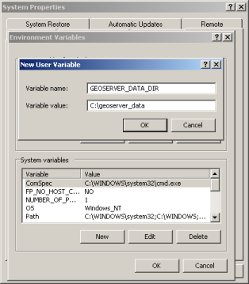

Setting the Data Directory¶
GeoServer 데이터 디렉터리의 위치 설정은 GeoServer를 어떤 형태로 설치하느냐에 따라 달라집니다. 다음 단계는 사용자 플랫폼에 맞게 따라주십시오.
주석
GeoServer 데이터 디렉터리의 위치를 따로 설명하지 않을 경우, data_dir 디렉터리를 GeoServer 설치 루트 디렉터리 아래 있는 것으로 간주합니다.
Windows¶
윈도우 플랫폼에서 GeoServer 데이터 디렉터리의 위치는 GEOSERVER_DATA_DIR 환경 변수가 결정합니다. 이 변수를 설정하는 방법은 윈도우 버전에 따라 다릅니다.
Windows XP¶
데스크탑이나 시작 메뉴에서 내 컴퓨터(My Computer) 아이콘을 오른쪽 클릭해서 속성(Properties)을 클릭합니다.
대화창에서 고급(Advanced) 탭을 선택한 다음 환경 변수(Environment Variables) 버튼을 클릭합니다.
새로 만들기(New) 버튼을 클릭한 다음 GEOSERVER_DATA_DIR 라는 환경 변수를 만들고, 원하는 위치를 설정합니다.

Windows Vista¶
작성 예정입니다.
Linux¶
리눅스 플랫폼에서 GeoServer 데이터 디렉터리의 위치는 GEOSERVER_DATA_DIR 환경 변수가 결정합니다. 배쉬 쉘(bash shell)에서 다음 명령어를 실행하여 변수를 설정할 수 있습니다.
% export GEOSERVER_DATA_DIR=/var/lib/geoserver_data
이 명령어를 .bash_profile 또는 .bashrc 파일 안에 (역시 배쉬 쉘로 가정하고) 저장합니다. GeoServer를 실행하는 사용자명으로 배쉬 쉘을 실행해야 합니다.
Mac OS X¶
Binary Install¶
Mac OS X에서 바이너리를 사용하여 GeoServer를 설치하는 경우, 리눅스에서와 마찬가지 방법으로 데이터 디렉터리를 설정합니다.
Web Archive¶
서블릿 컨테이너 내부에서 GeoServer WAR를 실행하는 경우 여러 방법으로 데이터 디렉터리를 설정할 수 있습니다. 여기에서는 servlet context parameter를 설정하는 방법을 추천합니다. 또는 Java system property를 설정하는 방법도 있습니다.
Servlet context parameter¶
Servlet context parameter를 사용하여 데이터 디렉터리를 설정하려면, GeoServer 응용 프로그램을 위한 WEB-INF/web.xml 파일 안에 다음 <context-param> 요소를 만들어줘야 합니다.
<web-app>
...
<context-param>
<param-name>GEOSERVER_DATA_DIR</param-name>
<param-value>/var/lib/geoserver_data</param-value>
</context-param>
...
</web-app>
Java system property¶
Java system property를 사용해서 데이터 디렉터리의 위치를 설정할 수도 있습니다. 이 방법은 GeoServer를 업그레이드할 때마다 데이터 디렉터리를 설정해야 할 필요가 없으므로 업그레이드 시 유용합니다.
경고
Java system property를 이용할 경우 일반적으로 GeoServer만이 아니라 서블릿 컨테이너 내부에서 실행되는 모든 응용 프로그램의 속성을 동시에 설정하게 됩니다.
Java system property를 설정하는 방법은 서블릿 컨테이너에 따라 다릅니다.
Tomcat일 경우:
Tomcat 설치 디렉터리 아래에 있는 bin/setclasspath.sh 파일을 편집하십시오. CATALINA_OPTS 변수를 설정하여 GEOSERVER_DATA_DIR 시스템 속성(system property)을 정의합니다.
CATALINA_OPTS="-DGEOSERVER_DATA_DIR=/var/lib/geoserver_data"
Glassfish일 경우:
Glassfish 설치 디렉터리 아래에 있는 domains/<<domain>>/config/domain.xml 파일을 편집합니다. 이때 <<domain>>은 GeoServer 웹 응용 프로그램이 실행되고 있는 도메인을 의미합니다. <java-config> 요소 안에 <jvm-options> 요소를 추가합니다.
...
<java-config>
...
<jvm-options>-DGEOSERVER_DATA_DIR=/var/lib/geoserver_data</jvm-options>
</java-config>
...